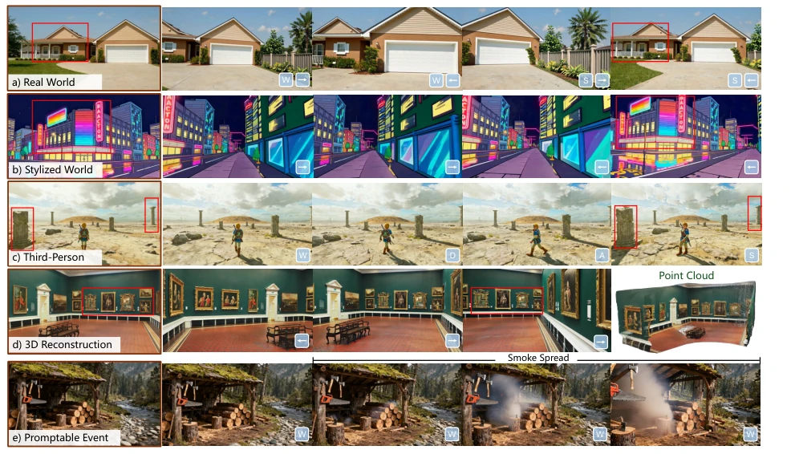
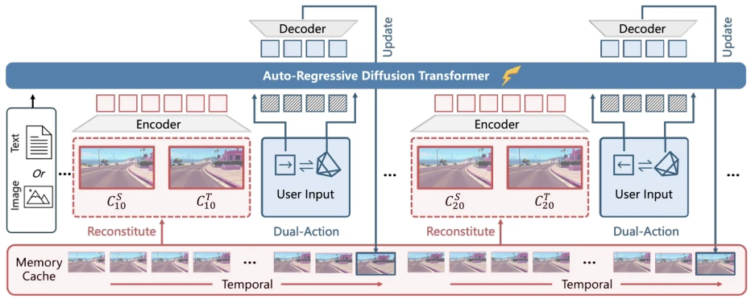
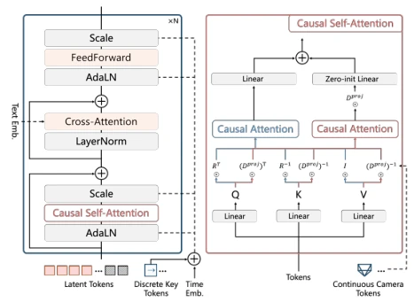
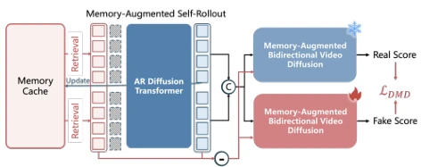
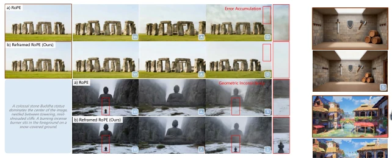
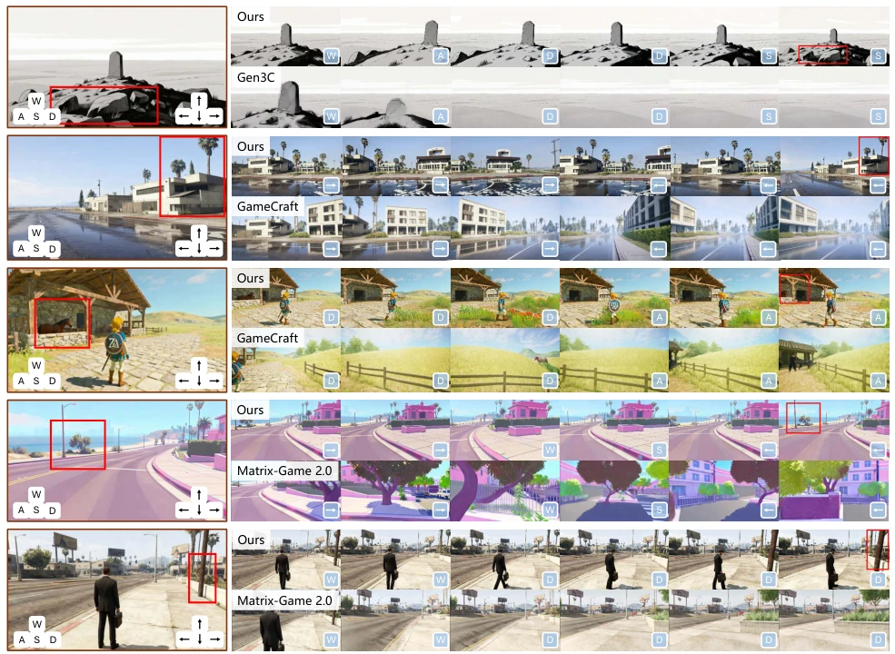
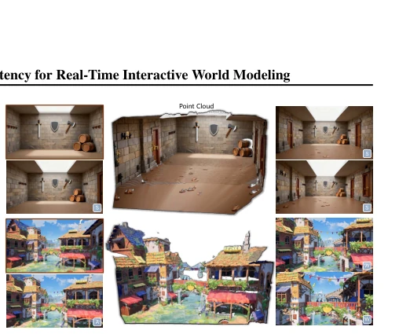
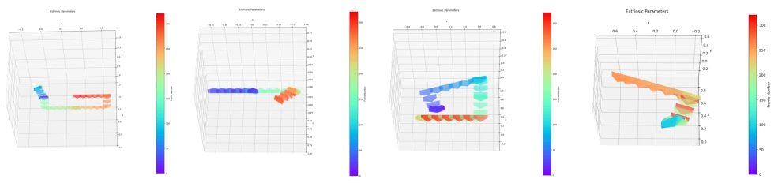

WorldPlay offers a commendable response to the world model challenge of "having it both ways"; running 720p at 24 FPS while remembering the path taken is indeed superior to those "forgetting as they go" distillation models. However, the 30-second generation duration limit remains somewhat awkward; generating long videos still relies on luck. Additionally, relying on FOV-based memory retrieval is prone to failure when occlusion is severe, a point the authors did not shy away from. Overall, it represents a practical engineering breakthrough, yet the theoretical "eternal consistency" falls slightly short, as Transformer long-range decay cannot be entirely resolved merely by rewriting RoPE. As a product of the Tencent Hunyuan team, its engineering implementation capability is indeed solid, but the academic "generalizability" claim requires further verification through more long-sequence testing.
研究动机Motivation
核心矛盾在于实时性（速度）和长程几何一致性（记忆）的权衡。现有方法分两派：一派像 Decart (2024) 和 Matrix-Game-2.0 (He et al., 2025b) 靠蒸馏追求速度，但缺乏记忆，重访场景时画面会崩坏；另一派像 VMem (Li et al., 2025b) 和 Gen3C (Ren et al., 2025) 靠显式/隐式记忆保一致性，但推理慢且蒸馏难。WorldPlay 想打破这个僵局，解决 autoregressive 模型在长序列中的误差累积和记忆衰减问题，实现既快又稳的交互。特别是传统蒸馏中师生模型记忆上下文分布不匹配的问题，导致长程生成质量下降，这是本文重点攻克的难点。
The core contradiction lies in the trade-off between real-time performance (speed) and long-range geometric consistency (memory). Existing methods divide into two camps: one, such as Decart (2024) and Matrix-Game-2.0 (He et al., 2025b), pursues speed through distillation but lacks memory, causing visual collapse when revisiting scenes; the other, such as VMem (Li et al., 2025b) and Gen3C (Ren et al., 2025), maintains consistency via explicit/implicit memory, but suffers from slow inference and difficult distillation. WorldPlay seeks to break this deadlock, addressing error accumulation and memory decay in autoregressive models over long sequences to achieve fast and stable interaction. Particularly, the mismatch in memory context distribution between teacher and student models in traditional distillation, which leads to degraded long-range generation quality, is the key difficulty this paper focuses on overcoming.

Figure 1. WorldPlay is a real-time, interactive world model that achieves long-term geometric consistency. It responds to user navigation commands in a streaming fashion, while maintaining scenes remain coherent when revisiting (shown in red boxes). Our model shows remarkable generalization across diverse scenes, including (a) real world, (b) stylized world, and (c) third-person agent control. Furthermore, it supports (d) 3D scene generation via reconstruction and (e) dynamic world events triggered by text-based manipulation.
The overall architecture is chunk-wise autoregressive diffusion. It takes a single image/text as input and predicts the next chunk of 16 frames. There are three innovations: 1) Dual Action Representation: Combining discrete WASD keys and continuous camera poses (R, T), the former ensures stable control while the latter enables precise positioning, resolving scale variance and memory retrieval conflicts. 2) Reconstituted Context Memory: Dynamically reorganizing memory, comprising short-term temporal memory and long-term spatial memory. It uses Temporal Reframing to rewrite the RoPE of long-term frames, forcibly bringing 'the past' closer to 'the present' to prevent long-range decay within the Transformer. 3) Context Forcing: Aligning the teacher-student memory context distribution during distillation, where the teacher also carries memory, avoiding error drift caused by causal/non-causal distribution mismatch. Coupled with streaming decoding and quantization, it achieves full 24 FPS. Additionally, a hybrid strategy of sequence parallelism and attention parallelism is adopted to balance computational load and further reduce inference latency.

Figure 2. Method overview. Given a single image or text prompt to describe a world, WorldPlay performs a next chunk (16 video frames) prediction task to generate future videos conditioned on action from users. For the generation of each chunk, we dynamically reconstitute context memory from past chunks to enforce long-term temporal and geometric consistency.

Figure 3. Detailed architecture of our autoregressive diffusion transformer. The discrete key is incorporated with time embed- ding, while the continuous camera pose is injected into causal self-attention through PRoPE (Li et al., 2025c).

Figure 5. Context forcing is a novel distillation method that employs memory-augmented self-rollout and memory-augmented bidirectional video diffusion to preserve long-term consistency, enable real-time interaction, and mitigate error accumulation.

Figure 7. RoPE design comparisons. Upper: Our reframed RoPE avoids exceeding the the positional range in standard RoPE, alleviating error accumulation. Bottom: By maintaining a small relative distance to long-range spatial memory, it achieves better long-term consistency.
Trained using 320K real/synthetic videos. Compared memoryless methods (CameraCtrl, Matrix-Game-2.0) and memory-based methods (Gen3C, VMem). Long-range testing utilized loop trajectories, with metrics evaluating visual quality and action accuracy (PSNR, SSIM, LPIPS, Rdist, Tdist). WorldPlay outperforms the memoryless group in long-range consistency, proving more stable than explicit 3D methods like Gen3C, with the lowest (best) MEt3R score. Ablation experiments demonstrate that Dual Action and Reframed RoPE are critical, while Context Forcing aligning memory prevents distillation collapse. The inference acceleration strategy achieves an 8.57x improvement, increasing from 2.8 FPS to 24 FPS, satisfying real-time interaction requirements.

Figure 6. Qualitative comparisons with existing methods. WorldPlay achieves the state-of-the-art long-term consistency (shown in red boxes) and visual quality across diverse scenes, including both first- and third-person real and stylized worlds.

Figure 9. 3D reconstruction results. We first utilize our model to autoregressively generate videos. The videos are then processed by a 3D reconstruction model to produce the final point clouds.
Figure 8. Ablation for context forcing. a) When the teacher and student have misaligned context, it leads to distillation failure, resulting in collapsed outputs. b) Leveraging memory-less teacher introduces a distribution mismatching. c) Self-rollout historical context can introduce artifacts. Zoom in for details.

Figure 11. Camera trajectories included in our collected dataset.